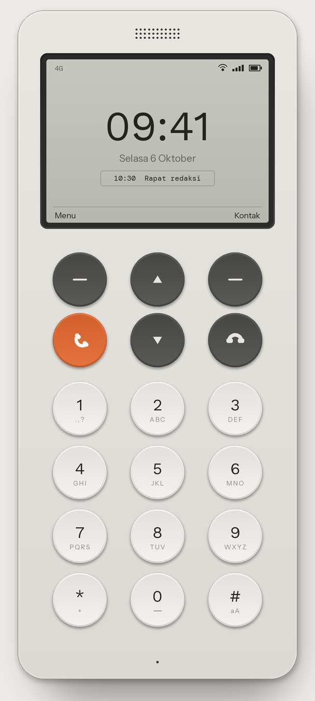
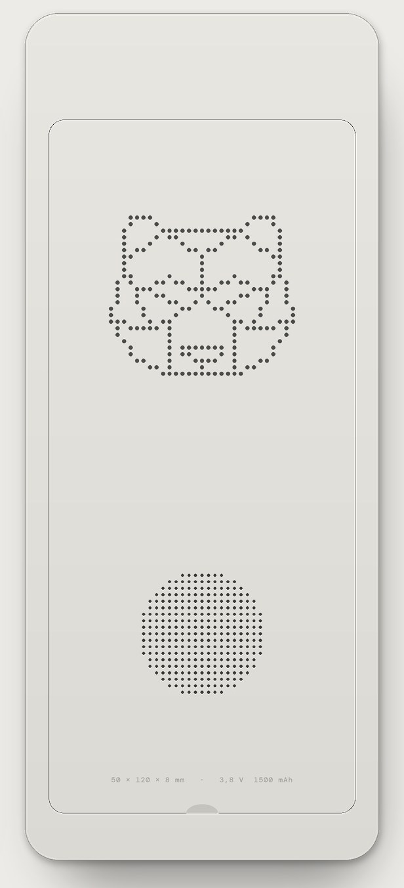
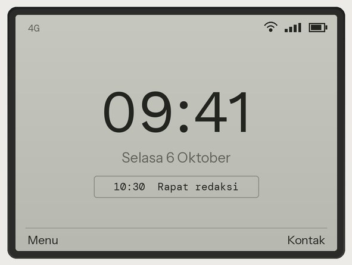
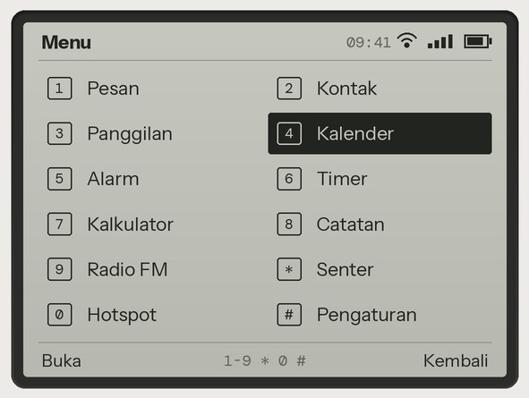
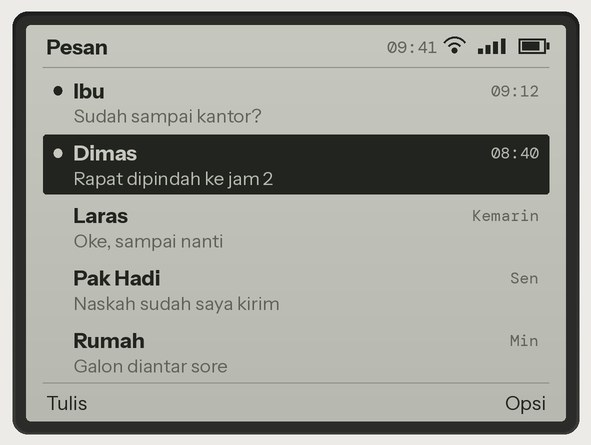
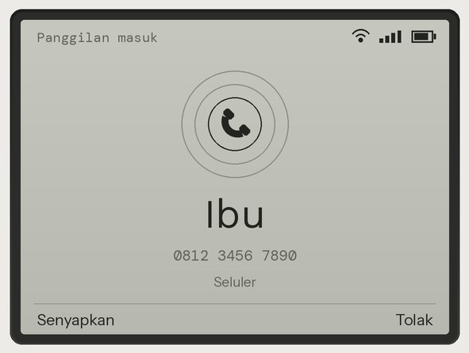
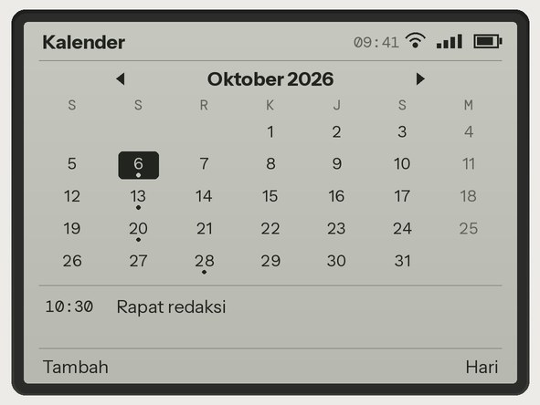
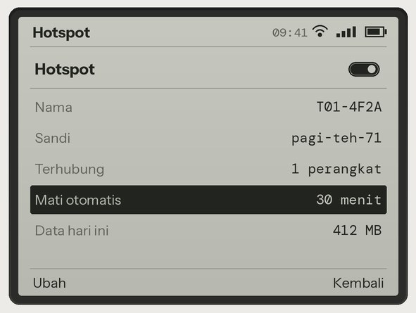
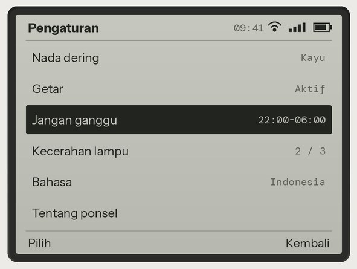
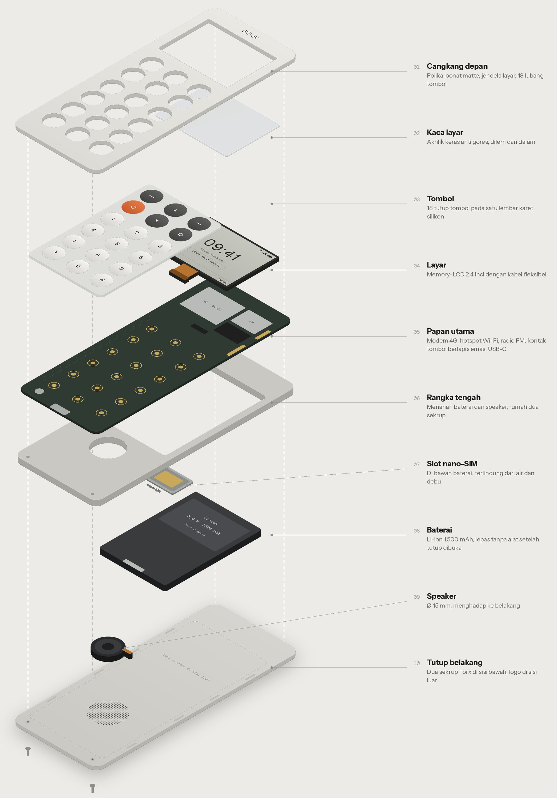

CONTOH
"{{r.q}}"
{{r.n}}{{r.r}}
Satu ponsel untuk telepon, SMS, dan kalender. Tanpa media sosial dan notifikasi yang menghabiskan jam kerja dan malam Anda.


Bertahan waras di dunia yang tidak waras.
Dua belas fungsi, satu tombol masing-masing. Tidak ada yang memancing Anda untuk membuka sesuatu.






Bear Phone dirancang sebagai satu-satunya ponsel Anda, bukan ponsel kedua. Nomor yang sama, kebiasaan yang baru.

Delapan hal yang perlu Anda tahu. Tidak ada angka kamera, tidak ada prosesor untuk dibandingkan.

Baterai 1.500 mAh bisa Anda ganti sendiri. Baterai habis umur? Ganti, bukan beli ponsel baru.
Bear Phone untuk Anda yang tetap ingin bisa dihubungi, tanpa harus terus terhubung.
CONTOHTestimoni contoh untuk tata letak. Ganti dengan ulasan pembeli asli sebelum tayang.
"{{r.q}}"
Bear Phone